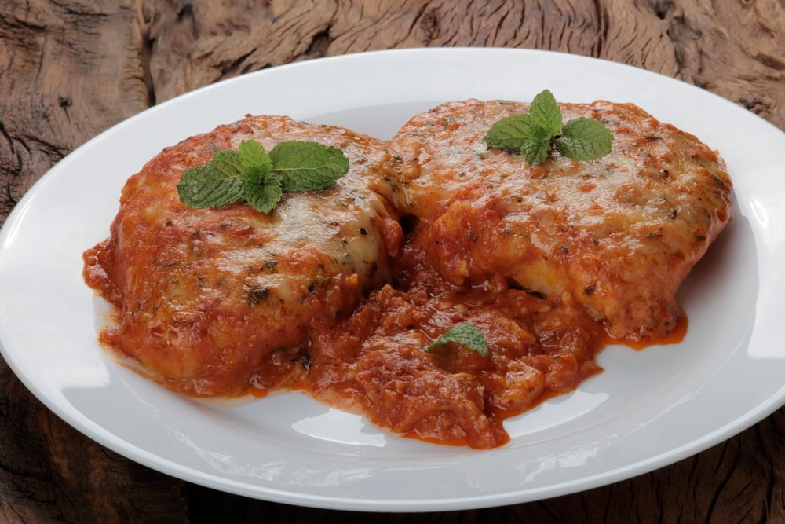

GUD0TOSTOSO

Clique na imagem para ver detalhes sobre os ingredientes da receita
Molho
- 1/2 cebola picada
- 1 lata de molho de tomate
- 1 colher (sobremesa) de catchup
- 1 colher (chá) de mostarda
- salsinha e cebolinha a gosto
- sal a gosto
- óleo
Modo de preparo
Bife
- Tempere os bifes com alho e sal e reserve.
- Bata o ovo inteiro e passe os bifes pelo ovo e pela farinha de rosca.
- Aqueça em uma frigideira o óleo e frite os bifes, escorra-os em papel-toalha e vá dispondo em um refratário.
Molho
- Refogue a cebola no óleo, junte o molho de tomate, o catchup, a mostarda, o sal, salsinha e cebolinha, abaixe o fogo e deixe o molho apurar.
Montagem
- Despeje o molho pronto sobre os bifes e distribua queijo mussarela sobre os bifes
- Salpique delicadamente um pouco de orégano por cima do queijo e leve ao forno até derreter o queijo.
- Sirva com arroz e purê de batatas.
- Bom apetite.